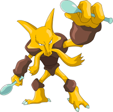
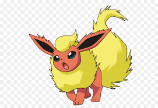
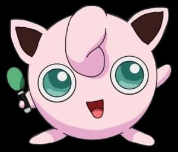

-
pikachu
Hp 300

Descrição
Pokémon Rato Toda vez que Pikachu dá de cara com algo novo, ele o acerta com uma descarga elétrica. Se você se deparar com um fruto torrado, é uma evidência de que esse Pokémon errou na intensidade de energia de sua descarga elétrica.
-
Charizard
Hp 800

Descrição
Charizard voa em torno do céu em busca de adversários poderosos. Ele respira fogo de tão grande calor que derrete qualquer coisa. No entanto, nunca vira a sua respiração ardente em qualquer adversário mais fraco do que o próprio.
-
mewtwo
Hp 1200

Descrição
Mewtwo é um Pokémon que foi criado por manipulação genéticado do Mew. No entanto, apesar de o poder científico dos seres humanos criado o corpo deste Pokémon, eles não conseguiram dotar Mewtwo com um coração compassivo.
-
Alakazam
Hp 900
Descrição
O cérebro de Alakazam continua a crescer, deixando sua cabeça pesada demais para o pescoço conseguir suportar. Ele deixa sua cabeça de pé através de seu poder psicosinético.
-
bulbasaur
Hp 400
Descrição
Bulbassauro pode ser visto cochilando sob luz solar intensa. Há uma semente na sua parte traseira. Por absorvendo os raios do sol, a semente cresce progressivamente maior.
-
flareon
Hp 540
Descrição
Flareon é um Pokémon mamífero , quadrúpede coberto de pêlo curto, laranja-avermelhado. Tem orelhas compridas com interiores pretos, olhos escuros e um pequeno nariz preto. Existem três dedos pequenos e uma almofada de pata amarela em cada pé
-
jiggypuff
Hp 540
Descrição
As cordas vocais de Jigglypuff ajustam livremente a frequência de sua voz. Este Pokémon usa sua habilidade de cantar precisamente em determinadas frequências para deixar seus adversários tontos, as vezes até em sono profundo.